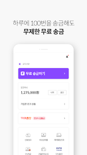
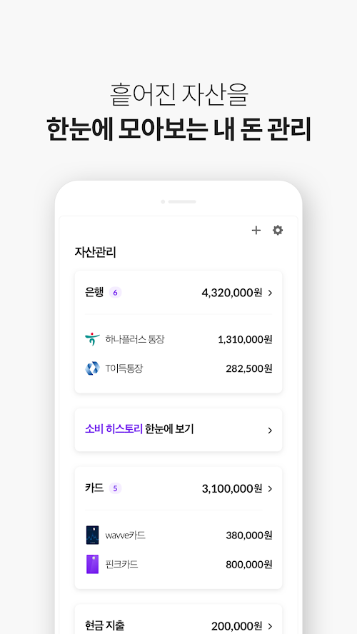
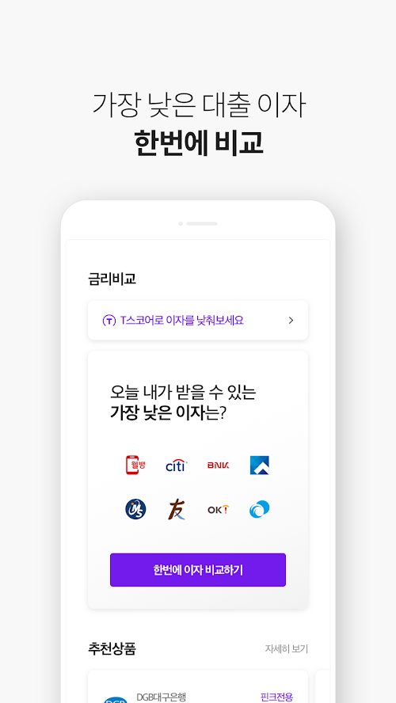
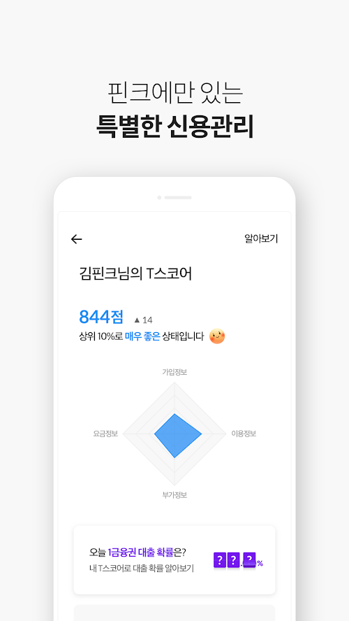
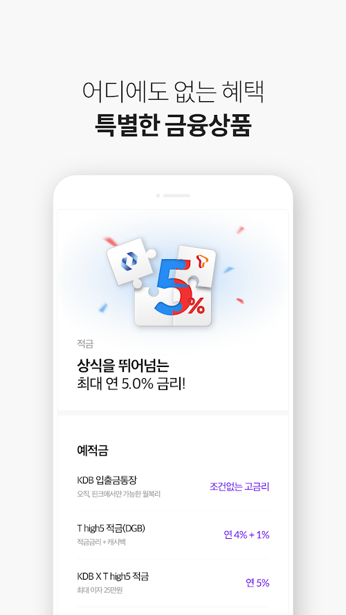

WORK
- 참여도 : 100%
- 작업환경 : HTML5, CSS3, jQUERY, Sass, Zeplin, Git/SVN, Jira, Wiki Confluence, Slack
- 기간 : 2018.08.01 - 재직중
- 담당업무 :
- Finnq App 서비스 운영
- 신규 추가 서비스 퍼블리싱 및 GUI구현
- Ajax 데이터 연동 이벤트 구현
- 트러블 슈팅(trouble shooting) 및 단위테스트
- Jenkins 및 ChangeFlow를 통한 형상 배포
- 운영 서비스
- 핀크계좌 : 무료송금과 하나은행 ATM출금, 캐시백 혜택까지 받는 입출금 통장 서비스
- 소비평가 : 자신이 사용한 영수증으로 하는 소비평가 기능 제공
- AI핀고분석 : 나의 소비, 소득을 분석하고 알맞은 금융 생활 조언 서비스
- 핀크마켓 : 혜택 많은 금융상품과 최고 할인률 기프티콘몰 서비스 제공
- 성과 :
- Semantic Markup 퍼블리싱
- 고해상력(High PPI) 디스플레이 대응
- Android/IOS 앱 오픈
- 1.0에서 2.0/3.0으로 개편하면서 UI/UX 향상
- 신규 서비스 추가 런칭
- 송금 서비스 전면 개편
[돈 버는 소비습관 핀크]
- 
- 
- 
- 
- 